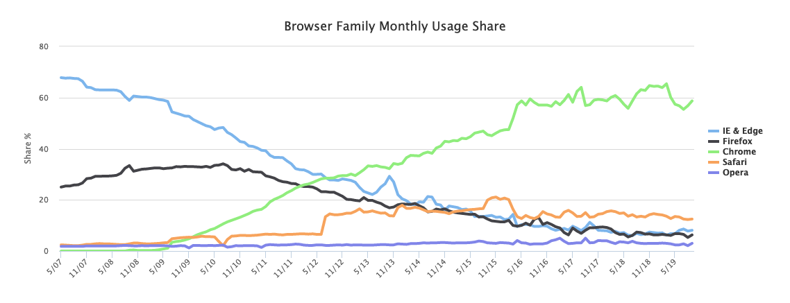

 W3CounterThe purpose of a web browser is to fetch information resources from the Web and display them on a user's device.
This process begins when the user inputs a Uniform Resource Locator (URL), such as https://en.wikipedia.org/, into the browser. Virtually all URLs on the Web start with either http: or https: which means the browser will retrieve them with the Hypertext Transfer Protocol. In the case of https:, the communication between the browser and the web server is encrypted for the purposes of security and privacy. Another URL prefix is file: which is used to display local files already stored on the user's device.
Once a web page has been retrieved, the browser's rendering engine displays it on the user's device. This includes image and video formats supported by the browser.
Web pages usually contain hyperlinks to other pages and resources. Each link contains a URL, and when it is clicked, the browser navigates to the new resource. Thus the process of bringing content to the user begins again.
Wikipedia